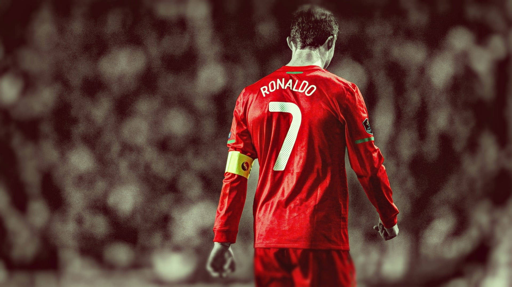
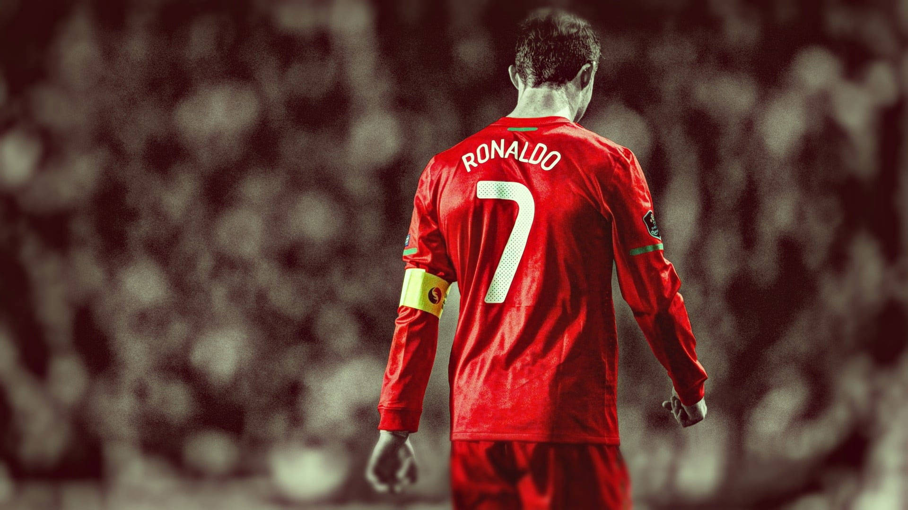

Vítejte na fanouškovské stránce Cristiana Ronalda!
Cristiano Ronaldo je portugalský profesionální fotbalista, považovaný za jednoho z nejlepších hráčů všech dob. Na této stránce se dozvíte vše o jeho kariéře, úspěších a nejlepších momentech.
Cristiano Ronaldo je portugalský profesionální fotbalista, považovaný za jednoho z nejlepších hráčů všech dob. Na této stránce se dozvíte vše o jeho kariéře, úspěších a nejlepších momentech.
